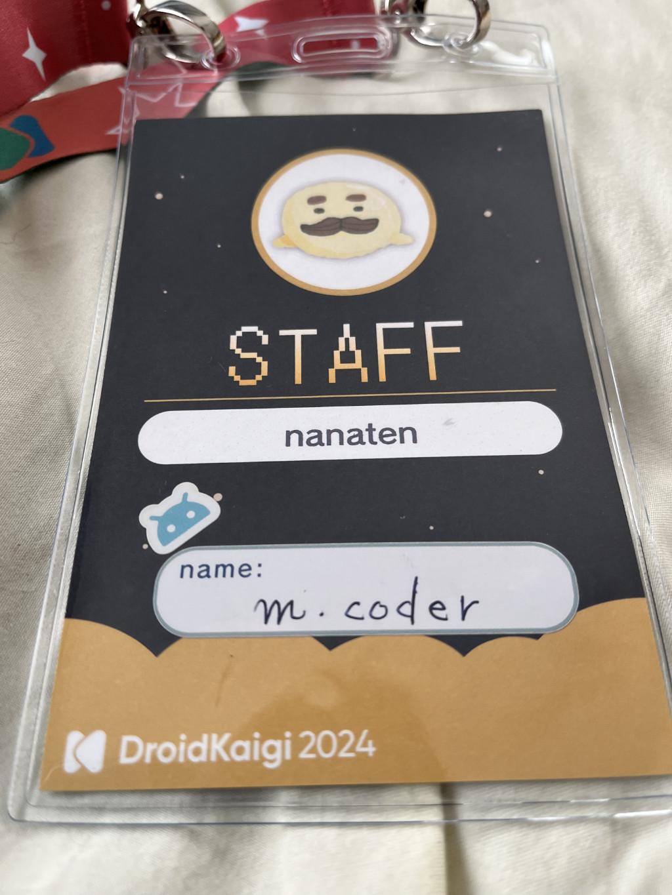
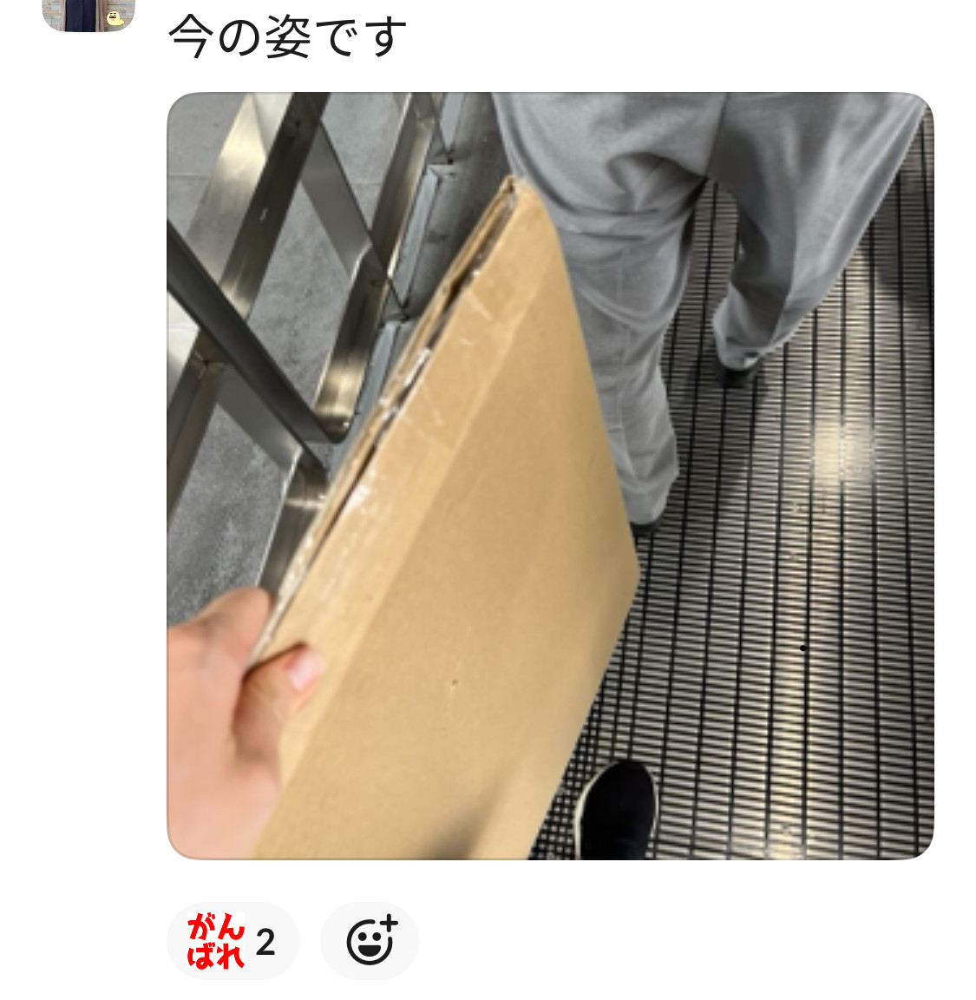

DroidKaigi2024 にブース出展しました
DroidKaigi 2024
DroidKaigi 2024
9/11(水)-9/13(金)にベルサール渋谷ガーデンにて開催された DroidKaigi 2024 にオフラインで参加してきました。
前回はボランティアスタッフ＋登壇という形でしたが、今回はスタッフ業はお休みし、所属企業であるフラー株式会社が初のブース出展を行ったため、出展側として参加してきました。
参加者として
導線
たぶん短くて済む参加者側のレポートから書くと、まず感じたのは、前回と同じ会場ということもあってか、かなり導線が整理されているなということでした。
例えば前回は、スポンサーブースと同じ部屋に2つセッション発表のエリアがあり、ブースの方の音でセッションの発表が少し聴こえにくいというような課題があったのですが、今回は同じ部屋でのセッション発表はなく、オープニングやパネルトーク、食事の場として使われていて、なるほどなーと思いました。
いきなりちょっとスタッフ的な目線入っててすんません。
セッション
セッションについては、これは主に自分の脳のキャパの問題なのですが、ブースの方に集中しすぎてそこまで数が見れなかったというのが正直なところでした。2日間で4セッションぐらいかな…？
でも、転職した元同僚が今回 DroidKaigi で初登壇しており、最前で圧をかけられた発表を見られたので嬉しかったです。
また、今回すぐにアーカイブ動画が公開されると事前にアナウンスされていたこともあり、あまり焦らずにブースの方に集中できたことも良かったなと思いました。
とりあえず今は Android開発以外のAndroid開発経験の活かしどころ を見るのが楽しみです。エモだったと聞く。
企画
今回もネイルを体験できたのが楽しかったです！
どうやら自分の爪はよっぽどネイルを塗りやすいらしく、去年に引き続きネイリストさんから「塗りやすい爪ですね」とお褒めいただきました。人生で爪を褒められると思っていなかったので、思わぬ嬉しさでした。
また、プリクラ機が導入されていて、これまた別の元同僚とプリクラを撮れたのが面白かったです。
その他
今年はスタッフ業はお休みと書いたのですが、一応籍としてスタッフ名簿には残っており、なんとスタッフ名札も用意していただけていたのが非常に嬉しかったです。

当日スタッフの方たちにも声をかけてもらったりして、まだ繋がりが残っているというのを感じて有難い気持ちでした。
ブースの企画について
さて、ここからは「ブース出展側」としてのレポートです。 ブースでは「Androidおみくじ」を実施しました。
出た運勢に応じて、お菓子や景品が当たるという企画になっています。
おみくじこちらです！
— m.coder (@_m_coder) September 12, 2024
実は運勢ごとにイラストも違うんです。
引いてくれた人はもう一度見直してみると発見があるかも…？ https://t.co/4jnPFNJLKo pic.twitter.com/ALTzXM5CRy
写真を見ていただくとわかるのですが、おみくじのデザインや文言、箱に至るまで全部社内で作っています。
デザインは社内のデザイナー、文言は Android ユニットのメンバーでアイデアを出し合って作りました。
フラーをご存知でない人も多いと思うのですが、弊社はデザインに強みを持っています。
所属デザイナーが多いというのもありますが、社長自身がデザイナー出身で「良いアプリの7カ条」という連載を持っているなど、アプリの体験設計の部分から自分たちで考えていく、という姿勢を取っています。
ふつうに考えたら市販のくじを買った方が圧倒的に労力は少ないのですが、「せっかくの企画なのだから、我々のデザインを見せていこう、自分たちで作ったものを出そう！」と、色々な人が関わって作り上げてくれました。
企画段階
ブース出展側になったことがある人は分かるかもしれないのですが、スポンサーが正式に決定するのがだいたい7月ぐらいで、9月が本番のため、2ヶ月ぐらいの間に全部を作り上げる必要があります。
今回が DroidKaigi で初めてのブース出展ということもあり、完全に一から全てを考える必要があり、かなりタイトなスケジュールの中でデザインをしてもらうなど、なかなかに激しい進行となりました。
進行管理をしてくれた採用ユニットの方、タイトなスケジュールの中デザインをしてくれたデザイナーの方には本当に頭が上がりません。ありがとうございました。
おみくじ
おみくじの写真を見ていただくとわかるのですが、これ縦に6つ折りになっています。
大吉！ #DroidKaigi pic.twitter.com/Tbh0HMMNgy
— Pluu (@pluulove) September 13, 2024
ブースに来てくれた方の中にも「これ誰が折ったんですか？」と聞いてくださった方がいたのですが、お目が高いですね。我々が折りました。
おみくじ折り募集！と称して社内で折ってくれる人を募り、温かみのある手作業で折っています。わたしも100枚以上は折ったと思います。
軽い気持ちで募集したら、思いの外いろいろな人（エンジニア、デザイナー、ディレクターなどなど）が折り作業に参加してくれて、お祭り感があって楽しかったです。
もしこのレポートを見た人でおみくじを引いてくれた人がいるなら、それはわたしが折ったおみくじかもしれませんね…
当日ブースについて
当日は採用・広報のメンバーと Android エンジニアのメンバーがブースに立ちました。
実は設営の日に届くはずだったブース用の荷物の宅配が遅れ、急遽わたしが Conference Day 当日に手で会場まで運ぶというトラブルが発生したりしてました。

ただこれも含めてお祭り感があり、わりと楽しくできたかなぁと思っています。
当日ブースに立ってくれる Android メンバーも社内で公募したのですが、最終的に10人ぐらいがブースに立ってくれることになり、思ったよりもたくさんのメンバーが関わってくれてとても助かりましたし、積極的に助けてくれるメンバーが多くて嬉しくなりました。ありがとうございました。
人数が集まったことで、1人1人のブースに立つ時間も短くでき、みんなセッションやスタンプラリー、他の企画なども楽しめていたようでよかったです。
終わってみてどうだったか
正直 文化祭みたいでかなり楽しかった です。
めちゃくちゃざっくり計算で正確な集計ではないのですが、だいたい2日間で400〜450人ぐらいの人がおみくじを引いてくれたようです。
自分たちが企画して作ったものが、それだけたくさんの人に目の前で楽しんでもらえる経験というのはなかなか無いですし、中には「フラー知ってます！頑張ってください」とお声かけしてくれる人もいたりして、とても嬉しかったです。
また、中には登壇などを通じてわたし自身を知ってブースに来てくださる方などもおり、非常にありがたい気持ちが溢れたイベントでした。
まとめ
去年は初のオフライン登壇、初のスタッフでしたが、今回は初のブース出展ということで、これまた初めての経験ができました。
今年は登壇とかはお休みしてゆっくりしよ…と思っていたのですが、いつの間にかゆっくりとは？という感じになっていました。人生
初のブース出展ということで、本当にここでは書ききれないぐらい色々と反省点などもあったのですが、ひとまず無事に乗り切れて良かったです。
ブース企画に関わってくれた皆さま、スタッフ側・ブース側で色々とお世話になった DroidKaigi スタッフの皆さま、ブースに来てくれた皆さま、個人的にお声掛けいただいた皆さま、本当にありがとうございました！！